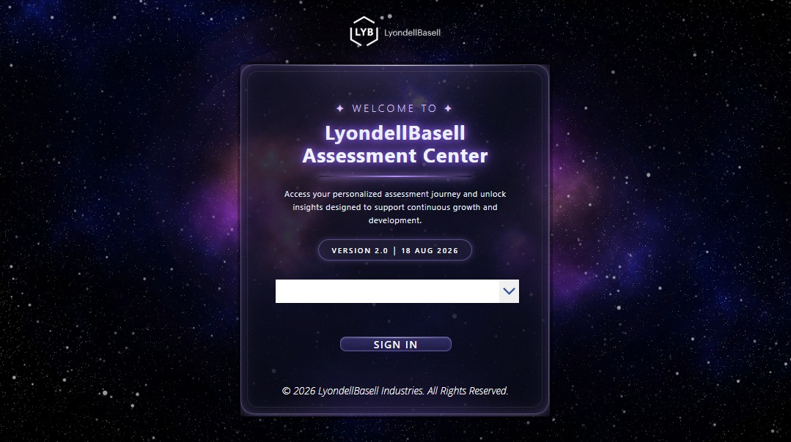
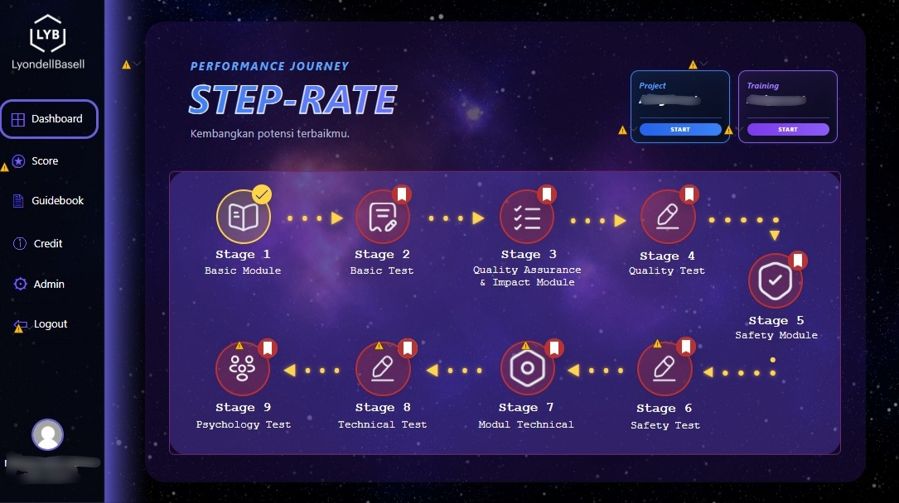
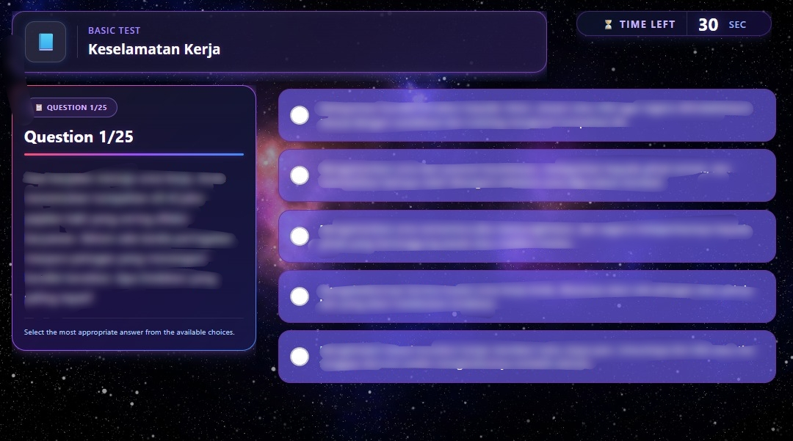
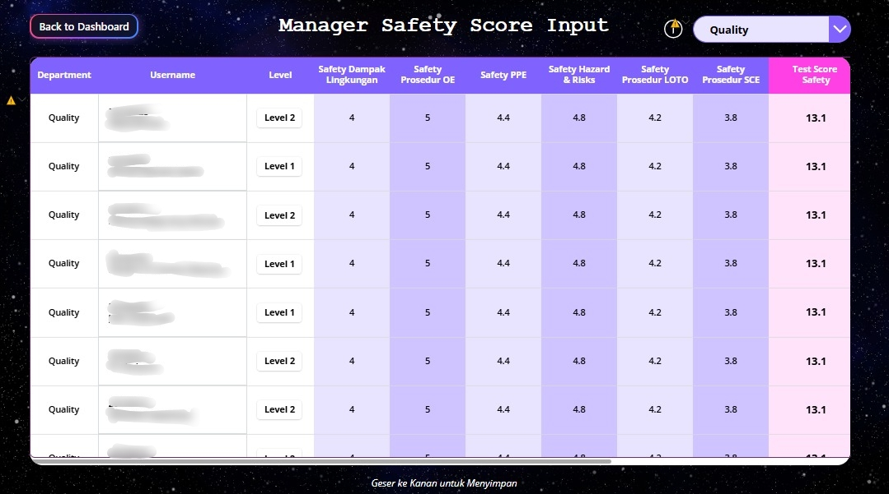
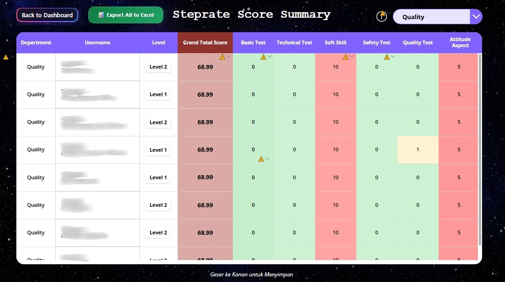
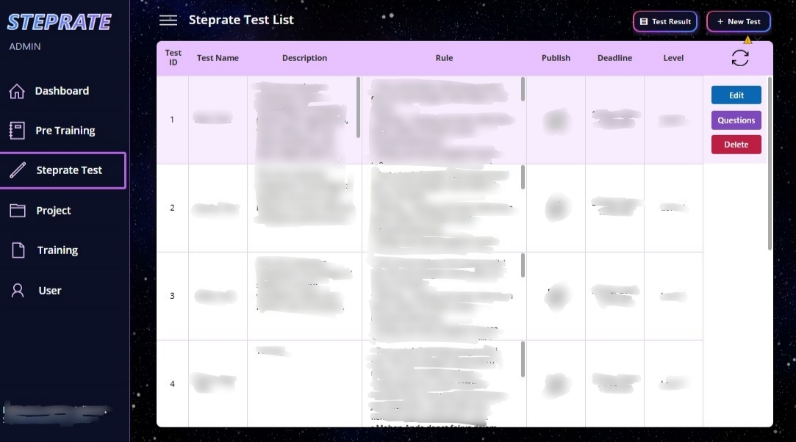
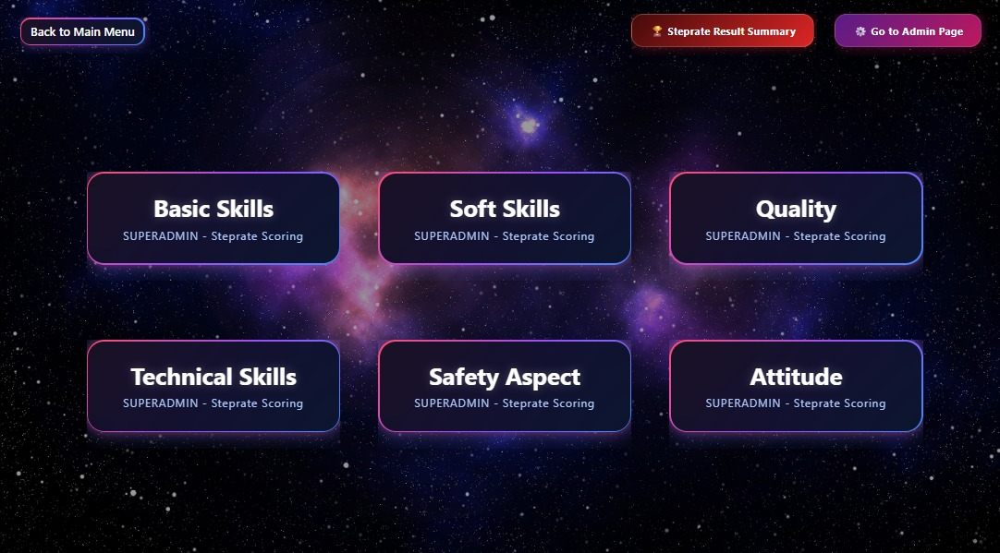
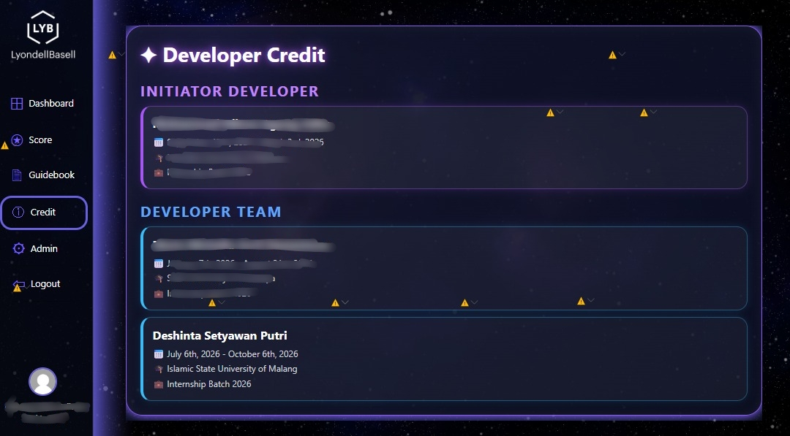

People Competency (Step-Rate)
Microsoft Power Platform
Power Apps
SharePoint
Power Automate
HTML
HRIS
Project Description
People Competency (Step-Rate) is a digital application developed to support employee competency assessments and performance evaluation processes. The application serves as an integrated platform that streamlines evaluation workflows and centralizes employee assessment data.
Screenshots








Key Features & Impact
- Multi-Stage Assessment: Supports a structured, multi-level evaluation process involving employees, managers, and HR across different departments.
- Role-Based Access Control (RBAC): Provides role-specific access permissions to ensure appropriate access to employee assessment data.
- Centralized Performance Evaluation: Integrates employee competency assessments into a centralized platform for more organized evaluation management.
- Impact: Successfully launched and actively adopted by approximately 200 employees across multiple departments, including management and HR teams.